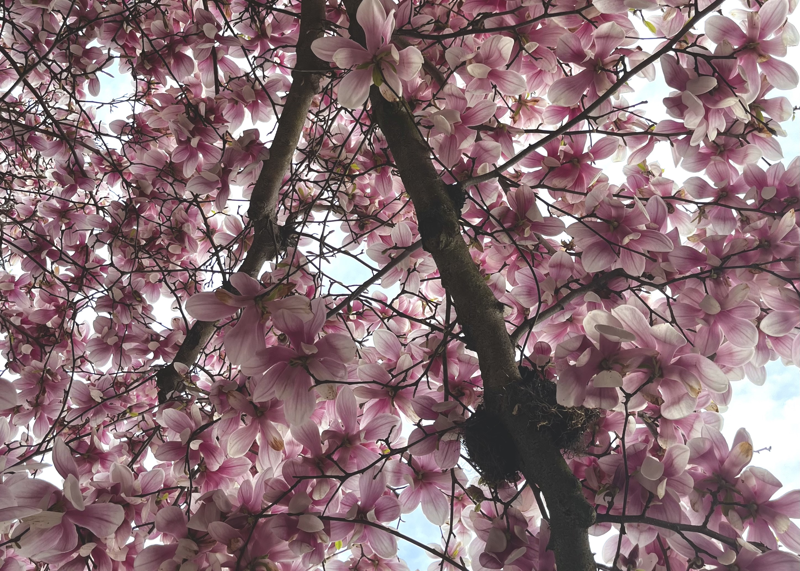
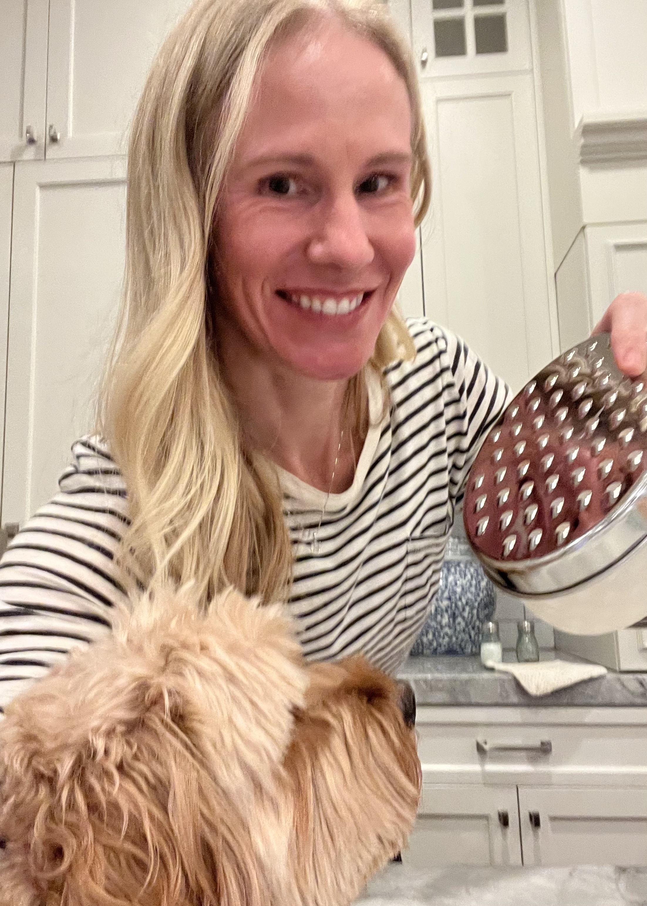
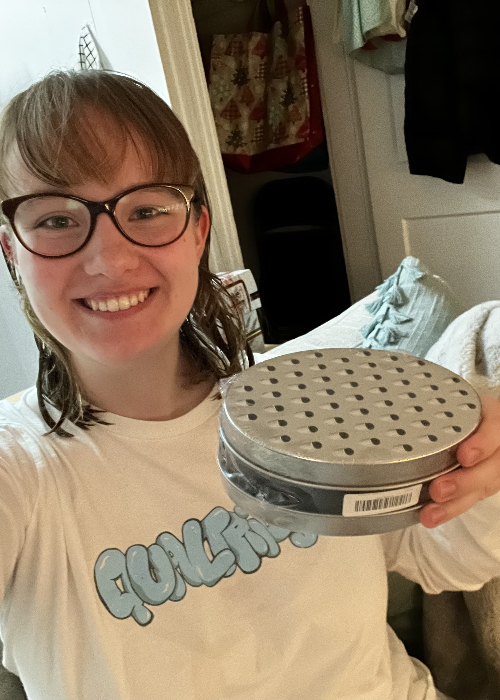
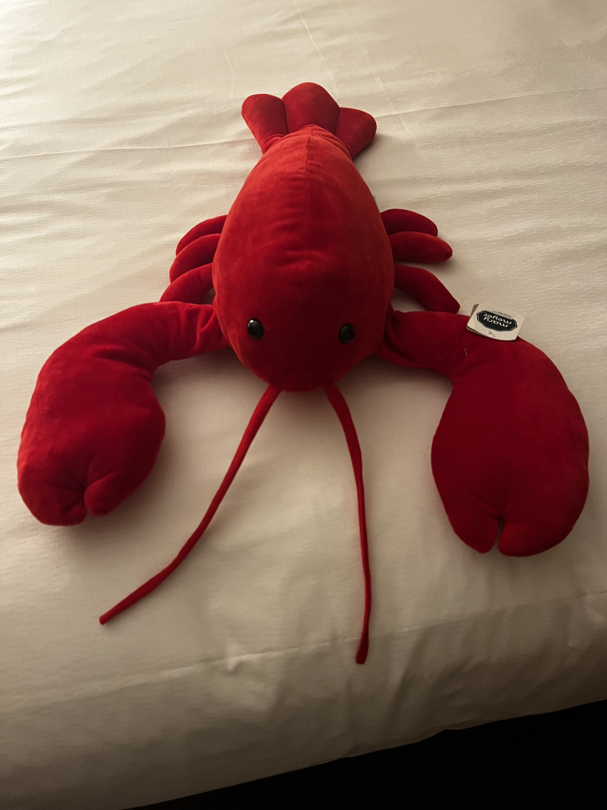

You've found Claire's secret page!
Fun Facts
Claire loves geese. Her lifelong dream is to become a goose and join a flock.

Claire's favorite time to be in Boston is in April, during the few weeks where the magnolia trees bloom.

Claire and her mom have matching cheese graters.

Claire has a stuffed lobster named Jerry.